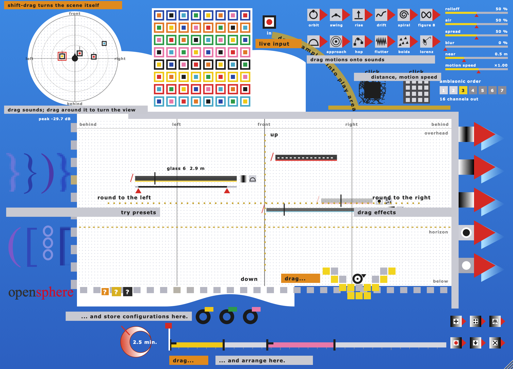
opensphere is a loop workspace that places its sounds in a sphere around you. You drag sounds into a window, they loop, and you keep moving and changing them while they play. The output is Ambisonics, so the result can be decoded to any speaker ring or dome, or to headphones.
It is the twin of openprocess, a loop workspace modelled on ovalprocess (2000) by Markus Popp, who records as Oval. Both are built from the same source code. Everything openprocess does, opensphere does the same way: the browser with 64 loops, effects, presets, logical operators, snapshots, the timeline, your own sounds, rendering, MIDI. What changes is the play area and the output.
| openprocess | opensphere | |
|---|---|---|
| play area left ↔ right | stereo panorama | direction, once round you |
| play area top ↔ bottom | loud ↔ soft | height, overhead ↔ 45° below |
| level | by height in the play area | by distance (the globe) |
| movement | you move the sounds | also twelve motions; scene turn and tilt |
| audio input | capture and Input Thru | capture, and a live input placed in the space |
| output | stereo | Ambisonics, 1st – 7th order (4 – 64 channels) |
Oval's music is made of short loops that drift against each other and never fall into a common beat. In stereo they share two speakers and blur together. Spread round a listener, each loop keeps its own place: you can hear which fragment is where, follow one while the others go on, and turn your head to bring another forward. A loop that orbits or rises slowly changes the piece without any change to the sound itself.
opensphere comes in the poppsphere bundle (with openprocess and Quell): one download per system from
the releases page of github.com/femifleming/poppsphere-bundle. On a Mac, Homebrew does it in one line:
brew install --cask femifleming/tap/opensphere.
| system | put the files here |
|---|---|
| macOS | opensphere.vst3 → ~/Library/Audio/Plug-Ins/VST3,
opensphere.component → …/Components, opensphere.vst → …/VST,
opensphere.app → /Applications. Universal: Apple silicon and Intel. |
| Windows | opensphere.vst3 → C:\Program Files\Common Files\VST3,
opensphere.dll (VST2) → your VST folder; opensphere.exe runs on its own. |
| Linux | opensphere.vst3 → ~/.vst3, opensphere.lv2 → ~/.lv2,
opensphere.so (VST2) → ~/.vst; opensphere runs on its own (ALSA or JACK). |
The macOS builds are signed ad hoc, not notarised. The Homebrew cask clears the quarantine flag; if you install by hand, right-click the app → Open the first time.
opensphere needs a track with enough channels for the order you want: 4 for 1st order, 16 for 3rd, 36 for 5th, 64 for 7th (chapter 10). After it on the same track goes an Ambisonics decoder, which turns the channels into speaker feeds or binaural stereo for headphones.
opensphere plays as soon as something is in the play area, whether or not the transport runs. It has nothing to do with the song tempo. Hosts that pass audio into the track feed the live input (chapter 9).
The app plays the stereo preview on the audio device set under Options → Audio/MIDI Settings; its renders are full AmbiX files at the chosen order. It asks for microphone access the first time, for capture and the live input. Your work is saved when you quit and is back when you start again.
The window can be resized from its lower right corner, from 600 to 1600 pixels wide. The proportions stay fixed.
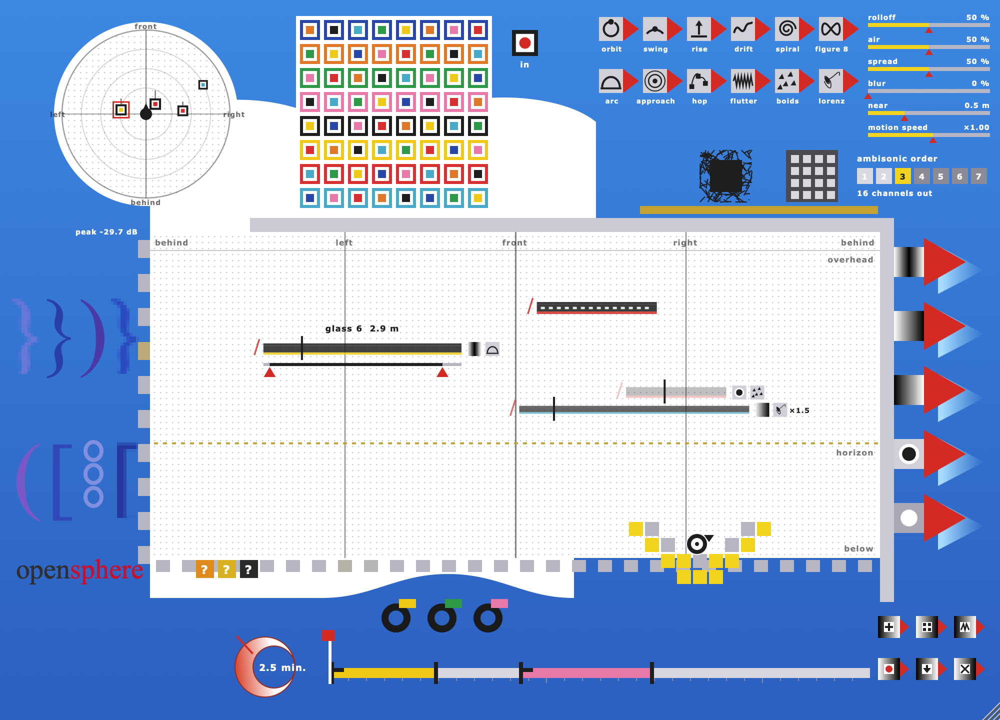
In the picture, loops from the browser and the live input (the bar with white dashes) are playing. Sounds with a motion carry its small icon after their bar, with their own speed beside it when it isn't ×1. The selected sound shows its name, its distance in metres and the red pointers of its loop. Messages such as "the play area is full" appear for a few seconds in a grey tag at the top left.
The play area is the sphere around you, cut open behind you and laid flat, like a map of the world. Where a sound sits in it is the direction it comes from.
The width of the play area is once round you. The middle line is straight in front. The quarter lines are left and right. Both edges are straight behind: they are the same place, where the sphere was cut. A sound that moves past one edge by itself (chapter 8) comes back in at the other.
The left half of the area is your left side, so the layout reads as if you faced the screen and the picture were wrapped round you.
The height runs from 45° below (bottom edge) to straight overhead (top). The dotted mustard line is the horizon, ear level, one third of the way up. Most of the area is above you, where a dome of speakers is; the lower part reaches below for spheres and headphones.
Near the top, directions close up: overhead every sound comes from the same point, whatever its left–right place. The height no longer changes the level, as it did in openprocess. Level comes from distance.
Sounds in the play area are drawn thick and solid when they are near and thin and faint when they are far away. Everything else about them works as in openprocess: drag to move, click to select, drag out to throw away.
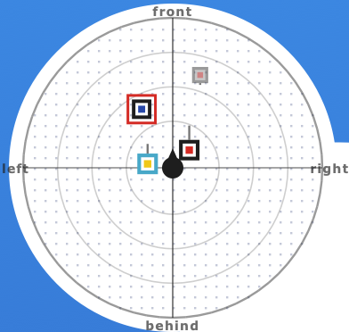
seen from above (the default)
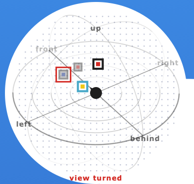
the view turned
The globe at the top left is the space with you in the middle, the black head. Four rings on the horizon mark a quarter, half, three quarters and the whole of the distance range; two circles run through overhead. Every sound appears as a small square in its browser colours. Squares on the far side are faint.
At first the globe is seen from above, front at the top. The angle from you is a sound's direction (its left–right place in the play area), the distance from you its distance. A short stalk up or down shows that it is above or below the horizon. Drag a square to set direction and distance at once; its height stays.
Drag the empty globe to turn it: sideways round the vertical, up and down to tip it, as far as a view from the side. Only the picture turns, nothing you hear. A red view turned shows below it. Now dragging a square moves the sound over its own shell: same distance, new direction and height, on the side facing you. The view can be turned while the timeline plays.
Shift-drag the empty globe to turn the sound scene itself: everything you hear turns round you (Scene Turn, −180° to 180°) and tips forward or back (Scene Tilt, −90° to 90°). The play area and the globe keep showing the sounds where you put them; the head turns to show where the front of the scene now is, and a red note gives scene x° / y°. Both are parameters, so a host can automate them.
Double-click the empty globe to see it from above again; shift-double-click also sets the scene turn and tilt back to 0.
Mouse wheel over a sound, on the globe or in the play area: up or away brings it nearer, down sends it further. The selected sound shows its distance in metres above its bar.
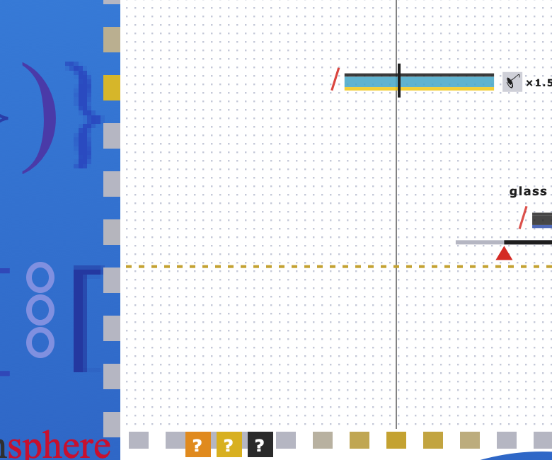
The grey squares of the frame round the play area are a meter of where the sound is. The row of 28 under the play area shows level by direction, with the same left–right layout as the play area: behind, left, front, right, behind. The column of 10 on its left shows level by height, from below at the bottom to overhead at the top.
Colours: grey below −36 dB, mustard to −24 dB, yellow to −14 dB, orange to −6 dB, red above.
The squares rise at once and fall by about 36 dB a second. Above the column, peak −xx dB gives the loudest square. The meter includes the Master level.
Distance runs from 0 (at your head) to 1 (the outer ring), shown as 0.25 + 19.75 · d² metres: 25 cm to 20 m. A new sound starts at about 2 m. With the distance settings at their defaults (below):
| distance | metres | level | width | air | direction |
|---|---|---|---|---|---|
| 0 | 0.25 | 0 dB | 80° | 18 kHz | none, all round you |
| 0.12 | 0.53 | −1.7 dB | 72° | 17.6 kHz | full from here on |
| 0.3 | 2.03 | −4.6 dB | 59° | 15.5 kHz | a new sound |
| 0.5 | 5.19 | −8.7 dB | 45° | 12 kHz | |
| 1 | 20 | −28.8 dB | 10° | 3.5 kHz | the outer ring |
Gains glide over about 20 ms. Distance is not a delay: no Doppler, no room echo.
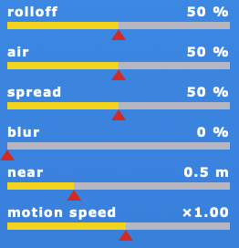
The six rails at the top right shape what distance does, for all sounds at once, and set the speed of all motions. Drag along a rail to set it; double-click it for the default. All six are parameters a host can automate, and every snapshot stores them (chapter 14). While the timeline plays, the rails show the values of the segment that is playing.
| rail | what it does | default |
|---|---|---|
| rolloff | how fast the level falls with distance. 50 % is the table above. At 0 % the far edge is only about 6 dB down; at 100 % a sound is 18 dB down at 5 m and practically silent (about −60 dB) from 11 m on. | 50 % |
| air | how much top far sounds lose. 0 %: none. 50 %: 3.5 kHz at the far edge. 100 %: about 700 Hz. | 50 % |
| spread | how wide a stereo sound is when near: 20° at 0 %, 80° at 50 %, 140° at 100 %. At the far edge every sound is 10° wide. | 50 % |
| blur | how much far sounds lose the sharpness of their direction. The higher orders are turned down with distance, each order step to as little as 15 % at the far edge with blur at 100 %, so a far sound becomes broad and vague, like a 1st-order image. | 0 % |
| near | the near-field radius: inside it the higher orders fade and the sound surrounds you, inside your head at 0. From 0 to 0.4 of the range, shown in metres (0.25 – 3.4 m). | 0.5 m |
| motion speed | all motions faster or slower, ×0.1 to ×4, on top of each sound's own speed. It runs the motion clock, so changing it never makes a sound jump. | ×1.00 |
The twelve icons on red pointers at the top right are motions. Drag one onto a sound and it sticks as a small icon after the bar. From then on the sound moves through the space by itself. One motion and one effect per sound.
| motion | what the sound does | period at ×1 |
|---|---|---|
| orbit | goes once all the way round you; height and distance stay | 24 s a turn |
| swing | swings to either side of its place, ±40°, like a pendulum | 8 s |
| rise | rises from its height to straight overhead and sinks back | 16 s |
| drift | wanders slowly round its place, sideways and up and down, never quite repeating | slow |
| spiral | goes round you while climbing towards overhead and coming back down | 20 s a turn, 40 s up and down |
| figure 8 | draws a figure of eight about its place, about ±43° sideways and ±11° up and down | 10 s |
| arc | rises over your head, comes down on the opposite side, and goes back the same way | 14 s there and back |
| approach | comes up close to you (to a tenth of its distance) and goes back out | 12 s |
| hop | jumps to a new place near its own (up to about ±54° sideways, ±20° in height), with a short glide | every 3 s |
| flutter | trembles quickly by a few degrees, sideways, up and down and in distance, like wings | 4 – 10 times a second |
| boids | all sounds with boids form one flock: they keep together, keep a little apart, fly the same way, are pulled back towards their own places and wander a little. Simulated as it plays, in renders too. | free |
| lorenz | follows its own stretch of the Lorenz attractor: the two wings swing it left and right, the other axes change its height and distance. A quarter of Lorenz time per second. | about 3 s a wing, never repeating |
The red square marked in, right of the browser, is the audio input of the plug-in (or the app's audio device). Its dot grows with the input level. Drag it into the play area and the input is placed in the space like a loop: a black bar with white dashes, whose red line shows the level. Move it, set its distance and give it a motion as with any sound. Of the effects only mute and solo act on it. It can be placed more than once. It is stored in snapshots and plays on the timeline, but a render has no input: record it as a loop first with capture input (chapter 17).
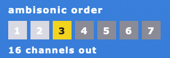
opensphere's output is Ambisonics: not speaker feeds but a description of the whole sound field, which a decoder turns into whatever you listen on. The format is AmbiX: channels in ACN order with SN3D normalisation, as used by the IEM and SPARTA plug-ins, YouTube and most players.
The seven squares at the top right choose the order. Click one. The chosen order is yellow; the orders actually being sent are light. Below it, "N channels out" tells what goes out, or "stereo preview".
| order | channels | where |
|---|---|---|
| 1st | 4 | all formats |
| 2nd | 9 | all formats |
| 3rd | 16 | all; default; AU max. |
| 4th | 25 | VST3, VST2, LV2 |
| 5th | 36 | VST3, VST2, LV2 |
| 6th | 49 | VST3, VST2, LV2 |
| 7th | 64 | VST3, VST2, LV2 |
Channels = (order + 1)². Renders are possible at every order in every format, the app included.
Higher orders place sounds more sharply but need more channels and more speakers to pay off. 3rd order is a good default for headphones and small rings; 5th to 7th suit large domes.
If the track has fewer channels than the chosen order needs, opensphere sends the highest order that fits, and the label shows it: with 16 channels and 5th order chosen, 3rd order goes out.
Put the decoder directly after opensphere on the same track. Set it to the same order and to ACN / SN3D: binaural for headphones, AllRAD or similar for speakers. A head-tracking rotator such as IEM SceneRotator goes between the two.
On a stereo track (Ableton Live, Logic) and in the standalone app, opensphere encodes at 1st order and folds it to left and right: W + Y and W − Y, two virtual microphones pointing left and right. You hear left and right, distance, width and motion, but not height, and front and back sound the same. Only the preview has a limiter: with many near sounds, keep Master down.
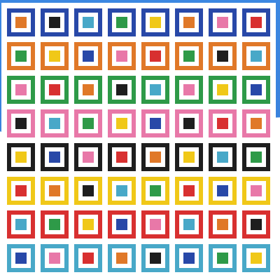
The browser holds 64 loops in an 8 × 8 grid. The outer colour of a square shows its row, the family of sounds; the inner colour tells the columns apart. Drag a square into the play area and the loop starts at that place, 2 m away. Click a square to select it for skip again and capture input. A pale square is still being made.
Click a sound in the play area to select it. Below it a grey strip stands for the whole sample, with two red pointers: the part between them loops. Loop ends are crossfaded over about 6 ms. Up to 24 sounds, the live input included, can play at once.
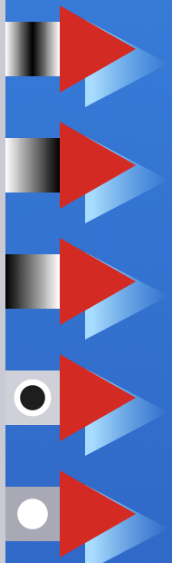
The five effects on the right edge work as in openprocess. Drag one onto a sound; it sticks as a small icon after the bar. One effect per sound; a new one replaces the old.
| icon (top to bottom) | effect |
|---|---|
| black in the middle | fade in / out over each loop |
| white → black | fade in over each loop |
| black → white | fade out over each loop |
| black dot | mute: the sound keeps running, silently |
| white dot | solo: only sounds marked solo are heard |
To remove an effect, drag its icon off the sound or drop the same effect on it again. Dropping it on another sound moves it there.
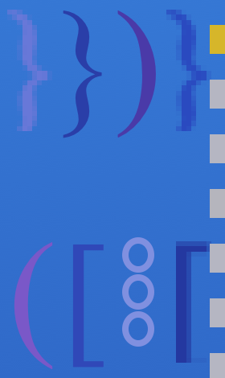
The eight brackets on the left are presets. A click fills the play area with 3 to 5 sounds, mostly from one browser row, never the same twice. Odd brackets use long parts of the samples (40–100 %), even brackets tiny fragments (3–25 %). Shift-click adds instead of replacing.
In opensphere, preset sounds are spread all round you, mostly a little above the horizon (from 15° below to 40° above), between half a metre and about 10 m away. Each has a one-in-four chance of a fade and about a one-in-three chance of one of the twelve motions.
The two logical operators above the play area change everything at once:
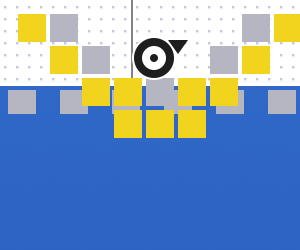
Click the yellow chequered snapshot button at the bottom of the play area and the whole scene is stored: every sound (place, distance, loop, effect, motion and its speed), any live input, and the global settings: the six rails and the scene turn and tilt. The snapshot lines up below as a reel, a black ring with a colour tag. There is room for 10 reels.
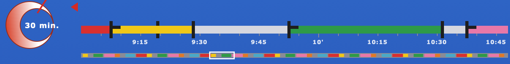
Reels dropped on the timeline become segments in the reel's colour: 20 seconds long, or an eighth of the stretch on screen when you are zoomed out.
Overlapping segments play together. Each keeps its own copy of the snapshot and plays with its own settings: its motions restart at the segment's start, at its motion speed, with its distance settings and scene turn. So motion types, speeds, distance and scene turn can all be sequenced. Segments fade in and out over 30 ms. There is room for 256 segments.
The red crescent sets the length of the composition, from 1 to 30 minutes: drag up or right for longer. The scale is logarithmic. Normally segments keep their places relative to the whole and stretch with it. Shift-drag the wheel and they keep their times in seconds instead; only the end moves (segments past a shorter end are dropped).
Thirty minutes do not fit on 540 pixels, so the timeline zooms. Over the timeline:
Zoomed in, a thin overview strip under the bar shows the whole piece with a white window round the part on
screen; drag the window or click the strip to jump. Ticks are written as 9:30 or 10'. You can zoom in until ten seconds fill the bar. Above: 30 minutes, zoomed in on 9–11 min.
The red flag is the play pointer. Click it to play from the flag to the end and round again, until you click again. Drag it to start later. Off screen, a red arrow shows where it is; while playing, the view pages along. While it plays nothing else can be changed (zoom still works); motions keep moving.
render to file (tools, ↓) writes the piece as an AmbiX WAV: 48 kHz, 24-bit, ACN / SN3D, with as many channels as the chosen order has, whatever the host or the app is playing. If the timeline has segments, the render runs from the play flag to the end of the composition; if not, it records the play area for the length set on the wheel. It is mixed at the current Master level.
The file is written as it goes, so a long piece needs no more memory than a short one; the corner counts up the percent. The default place is
~/Music/opensphere (your Music folder on Windows and Linux too), with a name like
opensphere 2026-11-13 21.04.10.wav. Files over 4 GB are written as RF64, the WAV variant without
that limit; most audio editors and Ambisonics players read it.
| order | channels | per minute | 30 minutes |
|---|---|---|---|
| 1st | 4 | 35 MB | 1.0 GB |
| 3rd | 16 | 138 MB | 4.1 GB |
| 5th | 36 | 311 MB | 9.3 GB |
| 7th | 64 | 553 MB | 16.6 GB |
The live input is not part of a render (chapter 9). Motions start from the beginning and the boids flock is simulated in the render, so the same piece renders the same way each time. A 30-minute piece at 3rd order is just under 4 GB, an ordinary WAV; at 4th order and above it becomes RF64.
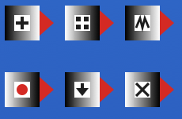
| button | does |
|---|---|
| + load sounds | choose files or folders to chop into the browser |
| ▦ built-in sounds | restore the synthesized bank |
| ⋀⋀ skip again | re-chop the selected square with a new pattern |
| ● capture input | the last 8 s of input, silence trimmed, into the selected square; saved in ~/Music/opensphere/captures |
| ↓ render to file | write an AmbiX WAV (chapter 16) |
| × clear | empty the play area. Shift-click: clear everything (play area, reels and timeline) for a new piece |
All 64 loops are made by opensphere when it starts, the same bank as openprocess. Rows: organ, guitar, feedback, skips, glass, low, noise, skipped. All use the same pitches (D, E, F♯, A, B, C♯), so any can be combined. Loops are chopped like a skipping CD. Columns run from clean on the left to heavily skipped on the right. Loops are 0.5 to 9 seconds long and none is a multiple of another, so they drift against each other.
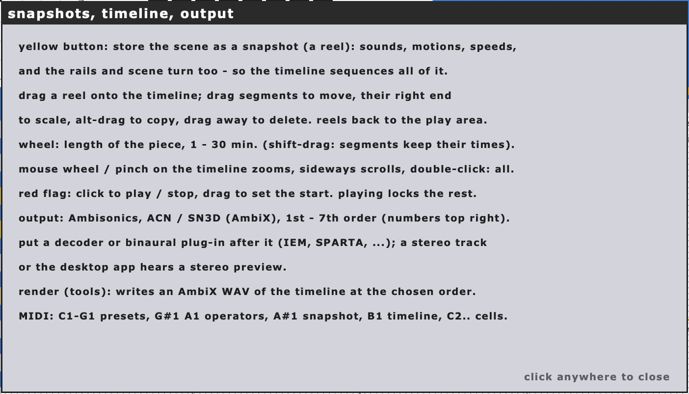
The three ? marks next to the word mark open help without stopping the sound:
Click the word mark to start the demo. A cursor works through the functions on its own. Any click ends the demo and puts back exactly what you had. The standalone app starts it by itself after three minutes without input when the play area is empty.
| note | number | action |
|---|---|---|
| C1 – G1 | 36 – 43 | presets 1 – 8 |
| G♯1 | 44 | operator: lengths |
| A1 | 45 | operator: places |
| A♯1 | 46 | snapshot |
| B1 | 47 | timeline play / stop |
| C2 – D♯7 | 48 – 111 | browser squares 1 – 64: add, or remove if playing |
Middle C = C3. Notes act on note-on; velocity and note-off are ignored. While the timeline plays, only B1 has an effect. A square added by MIDI goes to a random direction, from 10° below to 40° above, 2 m away.
| parameter | range | default |
|---|---|---|
| Master | 0 – 1 | 0.8 |
| Input Thru | 0 – 1 | 0 (ignored) |
| Ambisonic Order | 1st – 7th | 3rd |
| Distance Rolloff | 0 – 100 % | 50 % |
| Distance Air | 0 – 100 % | 50 % |
| Near Spread | 0 – 100 % | 50 % |
| Distance Blur | 0 – 100 % | 0 % |
| Near Field | 0 – 0.4 | 0.12 |
| Motion Speed | ×0.1 – ×4 | ×1 |
| Scene Turn | −180° – 180° | 0° |
| Scene Tilt | −90° – 90° | 0° |
All can be automated. Master scales everything that goes out and into renders. Ambisonic Order is the same as the seven squares. The next six are the rails (chapter 7), the last two the scene turn on the globe (chapter 5). Input Thru is kept so that sessions match openprocess, but opensphere ignores it: the input is heard only where you place it (chapter 9).
| item | value |
|---|---|
| browser | 64 loops (8 rows × 8 columns), 0.5 – 9 s each |
| sounds in the play area | up to 24, live inputs included |
| direction | play area left → right: behind, left, front, right, behind (once round you) |
| height | play area bottom → top: −45° to +90°; horizon one third up |
| distance | 0 – 1, shown as 0.25 – 20 m (0.25 + 19.75 · d²); new sounds 2 m |
| level by distance | rolloff 50 %: 0 dB at your head, −6 dB at about 3 m, −29 dB at 20 m |
| width of a stereo sound | near 20° – 140° (spread; 80° at 50 %) → 10° far |
| air | low-pass 18 kHz near → 3.5 kHz far at 50 % (700 Hz at 100 %) |
| blur | higher orders turned down with distance, to 15 % per order step at 100 % |
| near field | higher orders fade inside 0 – 0.4 (default 0.12, about 0.5 m) |
| scene rotation | turn −180° – 180°, tilt −90° – 90°; the globe view turns separately |
| motions | 12: orbit 24 s · swing ±40°, 8 s · rise 16 s · drift · spiral 20 s / 40 s · figure 8 10 s · arc 14 s · approach 12 s · hop 3 s · flutter · boids (one flock) · lorenz; own speed ×0.25 – ×4, global ×0.1 – ×4 |
| spatial meter | 28 directions × 10 heights in the frame; −36 / −24 / −14 / −6 dB steps; falls 36 dB/s |
| output format | Ambisonics, ACN / SN3D (AmbiX), no Condon–Shortley phase |
| order | 1st – 7th (4 – 64 channels), default 3rd; AU up to 3rd (16) |
| stereo preview | 1st order folded to W + Y / W − Y; stereo buses and the standalone app |
| snapshots | up to 10; with motions, speeds, rails and scene turn |
| timeline segments | up to 256; new segments 20 s |
| composition length | 1 – 30 minutes; the timeline zooms to 10 s |
| render | WAV, 48 kHz, 24-bit, AmbiX at the chosen order, streamed to disk, RF64 over 4 GB |
| user folder | ~/Music/opensphere |
| saved with the session | play area (with distances, motions and speeds), snapshots, timeline, length, flag, how each square was made, parameters |
| plug-in code | OpSp (openprocess and opensphere can be used side by side) |
Decoders that read opensphere directly: IEM Plug-in Suite (BinauralDecoder, AllRADecoder, SimpleDecoder, SceneRotator, up to 7th order) · SPARTA (AmbiBIN, AmbiDEC, Rotator) · any player or decoder that reads AmbiX (ACN / SN3D) files.
Ovalprocess sound installation, Dokumentation, Bedienungs- und Wartungshinweise, and Markus Popp, ovalprocess project text (Berlin, 7 April 2001), Ars Electronica archive · Markus Popp, ovalprocess US 2k lecture v0.2, Ars Electronica archive · Oval, "Ovalprocess", Leonardo 35/5, 2002 · Sam Inglis, "Markus Popp: Music As Software", Sound On Sound, October 2002 · Marc Weidenbaum, interview with Markus Popp, Disquiet / Pulse!, 1996. opensphere is an independent homage. It is not made, endorsed or distributed by Markus Popp or Oval.